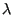
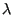

Next: Linear elastic materials for Up: Materials Previous: Linear elastic materials Contents
In [19] it is explained that substituting the infinitesimal strains
in the classical Hooke law by the Lagrangian strain and the stress by the
Piola-Kirchoff stress of the second kind does not lead to a
physically sensible material law. In particular, such a model (also called
St-Venant-Kirchoff material) does not exhibit large stresses when compressing
the volume of the material to nearly zero. An alternative for isotropic
materials is the following
stored-energy function developed by Ciarlet [17] ( and
 are Lamé's constants):
and
 are Lamé's constants):
| (295) |
The stress-strain relation amounts to ( is the Piola-Kirchoff stress of the second kind) :
| det | (296) |
and the derivative of
with respect to the Green tensor
 reads (component notation):
reads (component notation):
| detdet | (297) |
This model was implemented into CalculiX by Sven Kaßbohm. The definition consists of a *MATERIAL card defining the name of the material. This name HAS TO START WITH ”CIARLET_EL” but can be up to 80 characters long. Thus, the last 70 characters can be freely chosen by the user. Within the material definition a *USER MATERIAL card has to be used satisfying:
First line:
Following line:
Repeat this line if needed to define complete temperature dependence.
For this model, there are no internal state variables.
Example: *MATERIAL,NAME=CIARLET_EL *USER MATERIAL,CONSTANTS=2 210000.,.3,400.
defines an isotropic material with elastic constants
 =210000. and
=210000. and  =0.3 for a temperature of 400 (units appropriately
chosen by the user). Recall
that
=0.3 for a temperature of 400 (units appropriately
chosen by the user). Recall
that
| (298) |
and
| (299) |